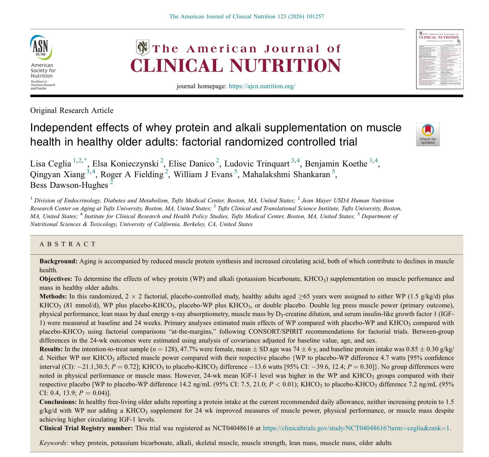
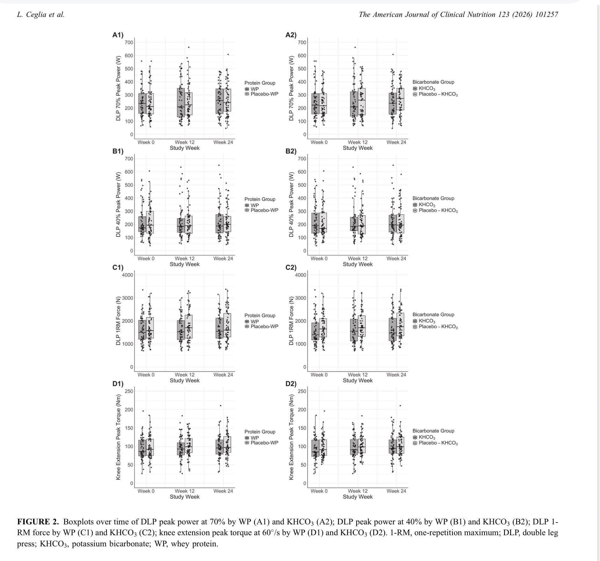
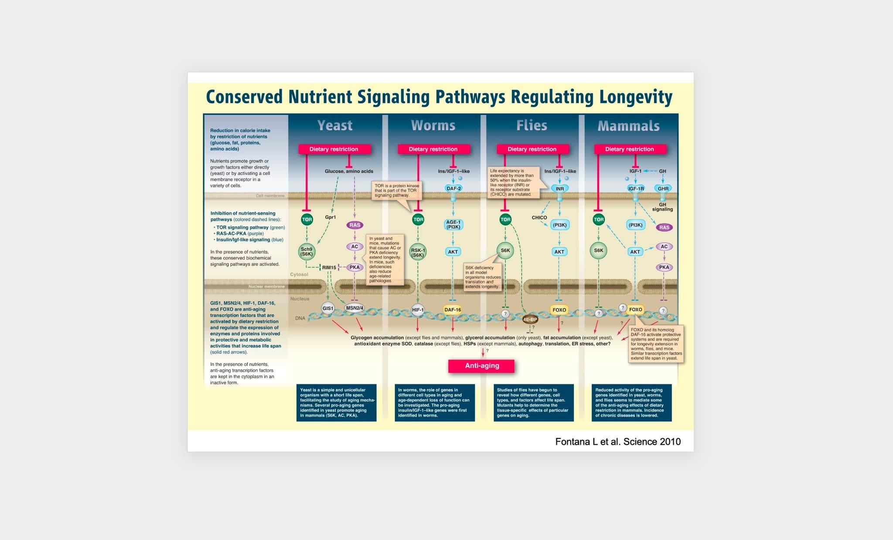
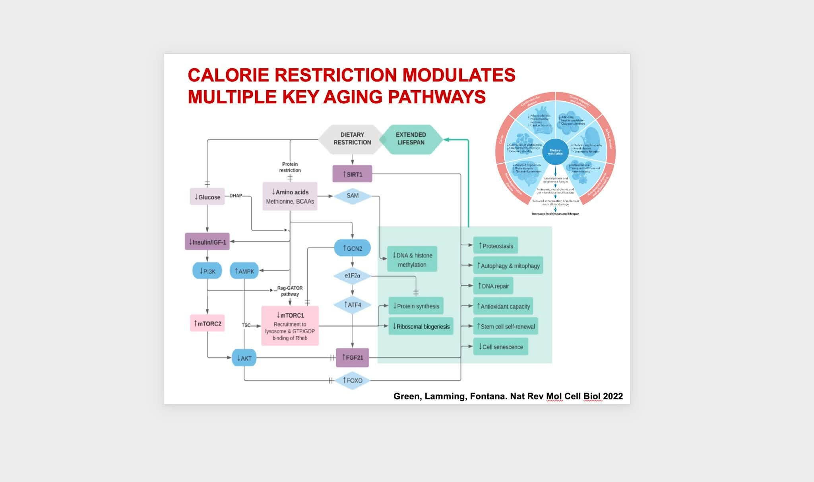

Whey protein significantly increased circulating IGF1 in this 6 month long randomized trial.
But it did absolutely nothing to increase any metric of muscle function or muscle mass on its own.
These people got all the potential harm of higher IGF1, with zero benefit. (Google “igf1 cancer”.)
#wheyHD #igf1HD #proteinHD #resistancetrainingHD #mtorHD #muscleHD #sarcopeniaHD
More protein. Higher IGF-1. No improvement in muscle function or muscle mass.
A new 24-week randomized, placebo-controlled trial in healthy older adults found that increasing protein intake to 1.5 g/kg/day with whey protein did not improve muscle power, strength, physical performance, or muscle mass. Supplementation with potassium bicarbonate was also ineffective.
escholarship.orgLink to escholarship.orgescholarship.org
Interestingly, whey protein significantly increased circulating IGF-1, yet this anabolic signal failed to translate into meaningful improvements in muscle outcomes. qt8048n5zf.pdf
This study reinforces an important principle:
Biomarkers are not clinical outcomes.
Raising IGF-1, activating mTOR, or increasing muscle protein synthesis markers does not necessarily lead to better physical function or greater muscle mass in healthy older adults.
The findings also challenge the widespread belief that simply increasing protein intake—often promoted to 1.2–1.6 g/kg/day for all older adults—is sufficient to preserve muscle.
The evidence continues to suggest that:
- Resistance exercise remains the primary stimulus for maintaining muscle strength and function.
- Protein supplementation alone provides little benefit in healthy, community-dwelling older adults who already consume adequate protein.
- Higher protein intake may increase IGF-1 without improving clinically meaningful outcomes.
The goal of healthy aging should not be to optimize surrogate biomarkers, but to improve outcomes that matter: strength, mobility, independence, quality of life, and ultimately healthy lifespan.
#HealthyAging #Longevity #Nutrition #Sarcopenia #LifestyleMedicine #Aging #ClinicalTrials #EvidenceBasedMedicine




